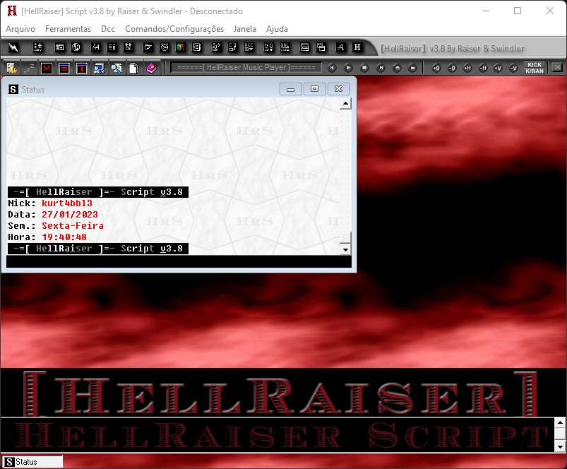

Hellraiser Script
HellRaiser 3.8 é um script para mIRC 5.71 desenvolvido em 1998.
Foi o único script brasileiro a ser publicado na revista internet.BR como o melhor do país em 1998.

Novidades va versão 3.8:
- Trocado o mIRC 5.51 pelo mIRC 5.71 em português.
- Acrescentado Menu de Configurações em GUI na primeira vez que você executa o [HellRaiser]
- Acrescentado Menu de Proteções do Canal em GUI em que você poderá configurar cada proteção CANAL POR CANAL :)
- Interface Gráfica do script totalmente renovada para MUITO MELHOR!
- Acrescentado Proteção de !Comandos que não permite que usuários usem opções de seus scripts como !fserver etc...
- Acrescentado Emotions em que você poderá configurar as cores dos olhos, boca e fundo.
-
Acrescentado sistema que preenche suas Emotions com cor até o final (Não importa o tamanho da emotion).
Ex: :)))))))))))))))))))))
veja mais
- Acrescentado novo Dialog com comandos completos para os Services da BrasNet ;)
- Acrescentado opção no Menu de Configurações para você escolher se deseja os Services(Chanserv, Nickserv e Memoserv) em Janelas(Dialogs) ou em Menus(Popups).
- Retirado as opções de Guerra do script, pois o [HellRaiser] não usa comandos "lamers". Comandos de Guerra, além de não funcionarem hoje em dia, só aumentam o tamanho do script e dificultam o seu download.
-
Acrescentado no sistema do script a utilização de /notice @#canal no lugar de /onotice na BrasNet para que você não seja desconectado por SPAM.
Para permitir o envio de "MSG On Join" por OPs e Voices, adaptamos ao script os comandos /cmsg nick #canal e /cnotice nick #canal .
OBS: Esses comandos são automaticamente executados pelo script quando você mandar ONotice ou Notice Normal para algum nickname APENAS quando você estiver conectado na BrasNet.
-
Comandos para os Bots da Undernet(X e W) atualizados em Dialog!
OBS: As opções dos Bots da Undernet serão automaticamente ativadas pelo script APENAS quando você estiver conectado na Undernet e se desativarão automaticamente quando você desconectar.
-
Comandos de IRCops atualizados!
OBS: Os comandos e janelas de IRCop serão automaticamente ativados pelo script quando você pegar o status de IRCop pelo Operserv. Você pode configurar para pegar IRCop automaticamente ao conectar dentro do Menu de Configurações em "Conexão".
- Acrescentado janelas para IRCops de ChatOPs, GlobOPs, HelpOPs, WallOPs e LocOPs com opção para Logar janela.
-
Acrescentado opção dentro do Menu de Configurações para você mudar a fonte padrão do script.
OBS: Quando a fonte for mudada pelo Menu de Configurações o script mudará automaticamente a fonte padrão para a fonte escolhida em todas as janelas ;)
- Agora a(s) senha(s) do Auto-Ident com o Nickserv é(são) guardada(s) pelo script de maneira CRIPTOGRAFADA, ou seja, se alguém usar seu computador não terá como fuçar nos arquivos do sistema do script e descobrir sua(s) senha(s) ;)
- Acrescentado Dialog para salvar vários nicks/senhas no Auto-Ident do Nickserv.
- Acrescentado opção "Kickar ao Banirem" no Menu de Configurações, ou seja, se esta opção estiver marcada, quando alguém banir um usuário sem kickar no canal em que você é OP, o script kickará o usuário que foi banido automaticamente.
- Acrescentado sistema Anti-Nuke, ou seja, se alguém estiver tentando lhe nukar pelo IRC o script irá lhe proteger do nuke e lhe avisar o nick de quem está tentando lhe nukar. ;)
- Acrescentado Barra de Atalhos dentro do script, facilitando para você vários comandos.
- Acrescentado Barra de Mensagens, ou seja, agora você não precisa mais ficar toda hora clicando na janela do Status para ver mensagens que sempre aparecem no mesmo e nem se encomodando com os /echo que antes apareciam no meio do canal atrapalhando seu bate-papo. Todas as mensagens que antes apareciam no Status ou em /echo agora aparecerão na Barra de Mensagens, embaixo do canal. (CONFIGURÁVEL)
- Acrescentado Auto-Effects dentro do Menu de Configurações, ou seja, você poderá configurar o script para tudo que você digitar, sair automaticamente com o efeito configurado :]
- Scanners do script corrigidos. Agora quando o script detectar um usuário infectado pelo Back Orifice ou NetBus, ele mostrará as informações do usuário infectado quando o mesmo entrar no canal e não quando sair ;)
- Acrescentado um Sistema de FServer altamente configurável em Dialog.
- Sistema de XDCC do [HellRaiser] atualizado!
- Cores da Nick List agora são atualizadas de 3 em 3 segundos e não quando um usuário entra no canal ;)
- Acrescentado Auto Detector de Clones On Join no canal. Quando um clone entrar no canal o script avisa automaticamente... Se você for OP ele avisará "Tecle F11 para banir". (CONFIGURÁVEL)
- Acrescentado opção para detectar Clones no servidor. (Ótimo para IRCops) ;)
- Acrescentado Shit List em Dialog, ou seja, você poderá salvar nicks que deseja que o aplique KickBan automaticamente quando os mesmos entrarem no canal em que você é OP. (CONFIGURÁVEL)
- Acrescentado Lista de Protegidos em Dialog, ou seja, você poderá salvar nicks que deseja que o script dê voice e proteja automaticamente quando os mesmos entrarem no canal em que você é OP. (CONFIGURÁVEL)
-
Acrescentado sistema altamente configurável de Auto-MSG Checker em Dialog!
Este sistema cria um Clone por sockets com a finalidade de evitar que você fique saindo e entrando do canal para checar usuários que estão fazendo propaganda ou mandando arquivos perigosos com Auto-MSGs de seus scripts no canal. (MUITO ÚTIL PARA OPERADORES)
- Acrescentado opção para você desativar os Sons do script no Menu de Configurações.
- Acrescentado sistema em que você pode escolher, no Menu de Configuração, se deseja que os Quits dos usuários que você estiver teclando em PVT apareçam na mesma janela ou só dentro dos canais :)
- Acrescentado opção "Não kickar OPs" na Janela de Proteções do Canal, ou seja, agora você pode escolher se quer que o script também kicke OPs com as protecões de canal ou não ;)
- Corrigido o TakeOver do script, agora com mais opções e todas funcionando a 100% ;)
- Acrescentado Dialog para Nick Completation com 8 efeitos prontos para sua escolha e com uma opção para você randomizar seus efeitos. Você também poderá personalizar(criar seus próprios efeitos através do Dialog).
-
Acrescentado Janela de ONotice com Popups, ou seja, se você for OP e teclar F12, o script abrirá uma janela separada como se fosse um canal e puxará automaticamente o nick de todos os OPs que estiverem no canal para dentro dela. Tudo o que você digitar nessa janela sairá como /onotice direto para os outros OPs e tudo o que eles digitarem como /onotice aparecerá para você naquela janela. Se você clicar com o botão direito do mouse em cima de algum nick que esteja na Nick List da janela você terá algumas opções. (CONFIGURÁVEL)
OBS: O Nick Completation, Auto-Color, Emotions e Auto-Effects também funcionam na janela de ONotice ;)
- Acrescentado Dialog para Efeitos de ONotice com 8 efeitos prontos para sua escolha e com uma opção para você randomizar seus efeitos ;)
- Procura por IRCops agora é em Dialog e com mais opções.
- Auto-Join agora é em Dialog.
- Auto-MSG agora é em Dialog e pode ser configurado no Menu de Configurações.
- Sistema de Logs agora é em Dialog e, ao ler os logs, o script mostra as cores dos logs junto e não como a maioria dos scripts que abrem os logs em .txt ;)
- Kick Counter agora é em Dialog.
- Modos Pessoais agora é em Dialog e pode ser configurado no Menu de Configurações.
- Lista de Servidores agora é em Dialog.
- Detector de Netsplit agora é em Dialog.
- Acrescentado Localizador de Home Pages em Dialog.
- Acrescentado opção para mudar as frases dos Auto-Kicks no Menu de Proteções do Canal.
-
Acrescentado Sistema de Votação em Dialog dentro de "Diversão" no popups do canal, ou seja, você configura o assunto a ser votado, o tempo que deseja que a votação fique ativa e os usuários do canal terão que digitar !sim ou !nao para votar no assunto escolhido. Terminando o tempo setado da votação o script dirá em porcentagem se o !sim ou !nao foi mais votado e dará a conclusão do assunto em debate.
OBS: O script só aceita um voto por nickname. Se o mesmo nickname tentar votar mais de uma vez o script mandará um notice ao nickname dizendo que ele não pode votar mais de uma vez.
O !sim e !nao são configuráveis ;)
- Acrescentado a opção "Codificar" que permite que você fale algo no canal totalmente criptografado e só os usuários do [HellRaiser] 3.8 entenderão o que você estará teclando ;)
- Acrescentado sistema de Mp3 que, quando você mandar abrir uma Mp3 usando o script, o [HellRaiser] abrirá automaticamente o HellAMP (Nosso Mp3 Player) e tocará a Mp3 mostrando todas as informações da música que você está ouvindo nos canais em que você se encontra. (CONFIGURÁVEL)
- HellAMP atualizado com uma nova Interface.
- Acrescentado opção para salvar lista de Mp3 em arquivo .txt com o tamanho de cada Mp3 ao lado de seu nome etc... ;)
- Acrescentado sistema de aviso nos Auto-Kicks, ou seja, 1º o script kicka com aviso e se o usuário retornar no canal e cometer o mesmo erro o script bane. (CONFIGURÁVEL)
- Acrescentado a opção "Macros" em Dialog dentro de utilidades que permite que você mesmo crie seus atalhos "/comando"
- Acrescentado vários tipos de escritas que não existiam na versão 3.7 do [HellRaiser]
- Acrescentado Estatística do Canal em Janela separada com porcentagem do canal etc etc...
- Acrescentado Proteção de ASCII Flood no Canal que não permite aos usuários floodarem o canal com desenhos ASCII.
- Acrescentado Proteção de Mass OP que não permite que um OP de @ a vários usuários ao mesmo tempo.
-
Acrescentado Proteção Anti-Propaganda de Canal (Nós criamos um sistema que kicka apenas #Canal quando estiver junto... Se for digitar Canal separado do # o script nao kickará).
Exemplos:
"Eaeeeeee... Entrem no #Brasil" O SCRIPT KICKA!
"Eaeeeeee... Entrem no # Brasil" O SCRIPT NÃO KICKA!
"#" O SCRIPT NÃO KICKA!
"# Brasil" O SCRIPT NÃO KICKA!
"# Brasil # Brasil # Brasil" O SCRIPT NÃO KICKA!
"##################Brasil #################" O SCRIPT KICKA!
"################## Brasil ################" O SCRIPT NÃO KICKA!
OBS: Se o usuário fizer propaganda do mesmo canal em que estiver dentro, o script não kickará.
-
Acrescentado Auto-Kick Anti-Repetição, que não permite que os usuários do canal fiquem repetindo suas falas...
Ex: ae
ae
[Kick] Fulano kickou Raiser ( [Auto-Kick]: Não repita suas frases aqui... Todo mundo encherga na 1ª vez que você digita. Se insistir é BAN! )
- Acrescentado opção no Menu de Proteções de Canal para configurar a porcentagem de Caps Lock permitido dentro do canal :)
- Acrescentado Ajuda em arquivo .hlp no script.
- Acrescentado Ajuda para os Bots da Undernet(X e W) em arquivo .hlp no script.
- Acrescentado Fundo nos Canais, PVTs e Status com uma cor criada pela nossa equipe que não força as suas vistas. (CONFIGURÁVEL)
- Acrescentado várias figuras ASCII e Hugs no popups da Nick List ;)
- Sistema de FTP do script atualizado.
-
Acrescentado Auto-Correção, que corrige vários tipo de palavras quando abreviadas.
Ex: Quando digitar blz o script automaticamente muda para beleza. (CONFIGURÁVEL)
- Acrescentado Proteções Pessoais de Action Flood(PVT), Notice Flood e Invite Flood.
- Acrescentado opção para Dar/Tirar HelpOP(%).
- Acrescentado popups para você usar em FServer no PVT.
- Popups com comandos para Eggdrop no PVT atualizado!
- Retirados programas Anti-Gen(deleta o Back Orifice) e Anti-NetBus(deleta o NetBus), pois colocamos os mesmos a disposição do download separadamente nesta Home Page.
- Acrescentado o Nobo(não permite que lhe invadam pelo Back Orifice e mostra informações dos mesmos que estão tentando lhe invadir).
- Acrescentado lista de Kicks engraçados.
veja menos